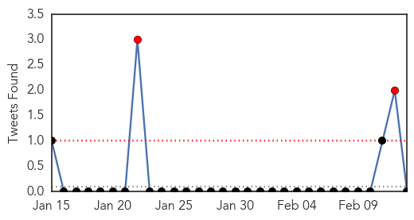

30 Day Trends
Web: 0 alerts, 0 warnings
Twitter: 2 alerts, 0 warnings
Top Articles:
- 0.999
- Chico News & Review
- 0.988
- MOH closely monitoring Malaysia's H7N9 situation, Others news, Health News, AsiaOne YourHealth
- 0.987
- One Dead Six Hospitalized With Bird Flu in China This Month
- 0.985
- Brother and Sister Confirmed First Two Deaths from Bird Flu This Year
- 0.953
- CHP closely monitors an imported human case of avian influenza A(H7N9) in Malaysia
- 0.945
- Singapore closely monitoring H7N9 situation after first case in Malaysia
- 0.938
- Vet dept on H7N9 alert
- 0.924
- Checks stepped up in Sabah after first H7N9 case discovered
- 0.910
- Influenza warning issued for Lao capital
- 0.903
- Threat of global disease outbreaks spawns 27-nation pact
- 0.886
- Threat of global disease outbreaks spawns 27-nation pact
- 0.872
- Opinion: Why global health security is a national priority
- 0.835
- Man Imprisoned for Spreading False Rumours About H7N9 Bird Flu Death
- 0.801
- Two Siblings from Kratie Die From Bird Flu on Same Day
- 0.713
- Malaysia reports first H7N9 case
- 0.595
- Nations Commit to Accelerating Progress against Infectious Disease Threats
Top Tweets:
-
No tweets found for Feb 13, 2014
Web/News Articles

Tweets
Article Locations

Article Confidences